DOI PDF Video Slides Video
CHI 2020 Talk
Slides


G-ID: Identifying 3D Prints Using Slicing Parameters
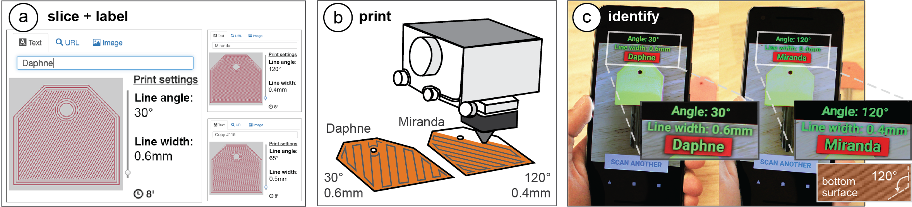
Figure 1. 3D printed objects inherently possess surface patterns due to the angle of the print path and the thickness of the trace the 3D printer lays down. G-ID exploits such features that would normally go unnoticed to identify unique instances of an object without the need to embed an obtrusive, additional tag. G-ID provides (a) a user interface for slicing individual instances of the same object with different settings and assigning labels to them. After (b) 3D printing, users can (c) identify each instance using the G-ID mobile app that uses image processing techniques to detect the slicing parameters and retrieve the associated labels.
We present G-ID, a method that utilizes the subtle patterns left by the 3D printing process to distinguish and identify objects that otherwise look similar to the human eye. The key idea is to mark different instances of a 3D model by varying slicing parameters that do not change the model geometry but can be detected as machine-readable differences in the print. As a result, G-ID does not add anything to the object but exploits the patterns appearing as a byproduct of slicing, an essential step of the 3D printing pipeline.
We introduce the G-ID slicing & labeling interface that varies the settings for each instance, and the G-ID mobile app, which uses image processing techniques to retrieve the parameters and their associated labels from a photo of the 3D printed object. Finally, we evaluate our method’s accuracy under different lighting conditions, when objects were printed with different filaments and printers, and with pictures taken from various positions and angles.
INTRODUCTION
Machine-readable tags have many applications ranging from package delivery and tracking, to interactive museum exhibits, and games. While in the last decades, researchers have mainly focused on developing 2D tags, the rise of 3D printing now enables researchers to investigate how to embed tags directly with the geometry of 3D objects. For instance, QR codes are no longer limited to 2D applications and can now also be used as part of a 3D object’s surface geometry by modifying the 3D model.
One key challenge when using tags is how to make them unobtrusive. To make tags less visible, researchers have investigated how to leave the surface intact and instead change the inside geometry of a model. InfraStructs, for instance, scans the object’s interior with a terahertz scanner, while AirCode requires a projector and camera setup to detect internal air pockets using subsurface scattering. Even though these approaches leave the object’s surface intact, both need large equipment, which prevents these solutions from being used in everyday scenarios.
To be able to use regular scanning equipment, such as a mobile phone camera, researchers proposed to analyze small imprecisions on the object’s surface that are created during the fabrication process. Those imprecisions are unobtrusive yet machine readable and can therefore be used as tags. Such imperfections make it possible to identify which fused deposition modeling (FDM) printer was used to create an object. For the purpose of easier explanation, we will refer to FDM printers as 3D printers for the remainder of the paper.
In this work, we propose a different approach to identification. When a 3D model is prepared for 3D printing, it first undergoes slicing, a computational process which converts a 3D model into layers and their corresponding print path (a G-code file), which the extruder then follows to create the 3D object. The parameters for the slicing process can be modified for each individual instance, which allows G-ID to create unique textures on the surface of objects that can be detected with a commodity camera, such as those available on a mobile phone. Since our approach allows us to be in control over which printed instance has been modified with which slicer settings, we can identify each instance and retrieve associated labels previously assigned by a user.
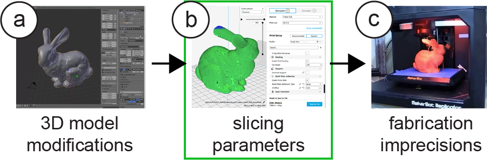
Figure 2. Different ways to embed tags into 3D models while leaving the surface intact:
(a) changing the internal geometry (Infrastructs),
(b) varying slicing parameters (G-ID),
(c) relying on fabrication imprecisions (PrinTracker).
Our contributions can be summarized as follows:
- A method to utilize the subtle patterns left as an inevitable byproduct of the conventional 3D printing process to identify objects without the need to embed an additional tag.
- A tool for users who want to create multiple instances of an object but intend to give each one a unique identifier.
- A mobile app that helps users take pictures of objects to be identified, as well as a stationary setup to detect finer variations in slicing parameters using image processing.
- An evaluation of the space of slicing parameters that can be varied to generate unique instances of a 3D model and the corresponding detection accuracy under different environmental and hardware-related conditions.
We demonstrate these contributions with a diverse set of interactive applications.
G-ID: LABELING AND IDENTIFYING OBJECTS BY THEIR SLICING PARAMETERS
The main contribution of G-ID is a framework to label and identify 3D printed objects by their distinct slicer settings.
G-ID labels 3D printed objects by intentionally varying the slicing settings of an unmodified 3D model which determine the path the extruder will follow. This allows G-ID to produce multiple instances that all have a unique artifact, e.g., the small grooves on the surfaces of the object that can be shaped differently when the print path is laid down.
G-ID then identifies the 3D printed object by such textures, i.e. after users take a picture of the object with a commodity camera, G-ID applies image processing techniques to first extract and then correlate the features with their initial slicing settings to retrieve the identifying label.
Main Benefits of Using Different Slicing Parameters
Slicing parameters reveal themselves on any printed object as a fabrication byproduct that is normally ignored. One may make use of these inevitable textures that come for free due to 3D printing. G-ID combines a wide range of slicing parameters to create a sufficiently large parameter space. For each slicing parameter for surface and infill, there is a variety of values available (see section “Spacing of Slicing Parameters”). The use of so many values is enabled by G-ID’s recognition algorithm, which uses a Fourier-based method for precise measurements. Detecting these values precisely in turn enables new applications such as “Finding optimal print settings” (see “Application Scenarios”).
G-ID Workflow for an Identification Application
In the following section, we describe how we use (1) the G-ID labeling interface to assign each instance of a 3D printed object a unique tag prior to 3D printing, and how we use (2) the G-ID identification app that runs on a mobile device to detect each object’s tag after 3D printing.
We explain the workflow of G-ID using an application scenario, in which we will create a set of forty key covers—each with an unobtrusive feature that identifies its owner. We use these key covers in our research lab: At the end of the semester when members depart, we often forget to write down who has returned their keys. Using G-ID, we can quickly identify whom the previously returned keys used to belong to and then send a reminder to those who have outstanding keys.
Labeling Interface (Slicer)To assign each key cover a unique tag, we open G-ID’s labeling interface (Figure 3) on our computer and load the 3D model of the key cover by dragging it onto the canvas. Since we want to create 40 key covers, we enter 40 instances into the left-hand panel of the interface.
#1 Generate Instances: We select “Mobile phone” as the desired detection setup. Next, we click the “Generate previews” button, which slices each instance of the key cover with a unique set of slicing settings. In this case, since we only request 40 instances, G-ID only varies the slicing parameters initial bottom line angle and initial bottom line width (more on this in section “Slicing parameters used for labeling”). After slicing is completed, G-ID previews each instance as shown in Figure 1a.
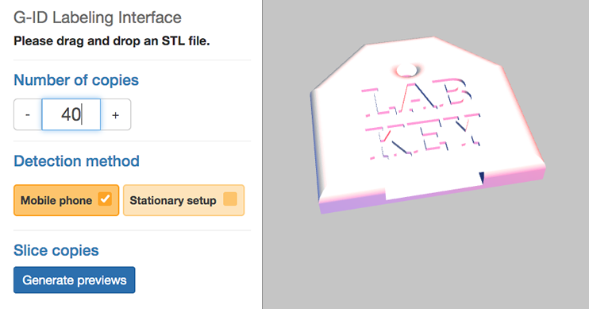
Figure 3. G-ID labeling interface: load a 3D model and enter number of unique instances needed.
#2 Enter Labels: We can now enter a label in the form of a text, an image, or a URL next to the preview of each instance. Since we want to give each key cover the name of one of our lab members, we enter one name per instance. We can update these labels later any time, for instance, when a new team member joins our lab and we need to reassign the key.
#3 3D Printing: Upon clicking the “Export” button, each instance’s G-code file is saved, as well as a digital file (XML) that stores the object information and the entered label corresponding to each instance. We can now send the G-code files to our FDM printer to obtain the printed instances. We also transfer the digital file that stores the object information to our smartphone to be used later for identification.
Identification Interface (Mobile App + Object Alignment)
At the end of the semester when we update our key inventory, we use the G-ID mobile app on our phone to identify which of the returned keys belonged to whom. After launching the app, we first select the model we would like to scan, i.e., the key cover, from our object library (Figure 4a). The app then helps us to align the camera image with the object by showing an outline of the object on the screen, similar to how check cashing or document scanning apps work (Figure 4b). When the outlines are aligned in this human-in-the-loop setting, the app automatically captures and processes the image (Figure 4c). It then identifies the features in the photo associated with the surface-related slicing parameter settings, retrieves the user-assigned label, and shows it on the screen (Figure 1c). We check off the lab members who returned their keys and send a reminder to everyone else.
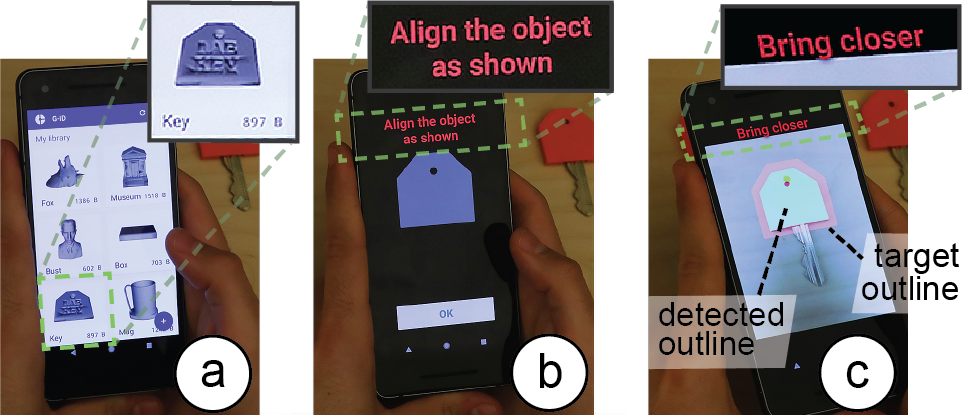
Figure 4. G-ID mobile app for identifying instances: (a) select model from library, (b) face the object, (c) once outlines are aligned, the app automatically takes the image.
To assign each key cover a unique tag, we open G-ID’s labeling interface (Figure 3) on our computer and load the 3D model of the key cover by dragging it onto the canvas. Since we want to create 40 key covers, we enter 40 instances into the left-hand panel of the interface.
Surface & Interior: Detecting Infill Using a Light Source
In the above described scenario, G-ID was able to successfully label each instance using only slicing parameters that affect the object’s surface, such as the initial bottom line width and angle because the number of instances was small. However, for scenarios requiring more instances, G-ID can also sense the interior of objects (infill) at the expense of adding a small light source as described in the next scenario.
For our department’s annual celebration, we are asked to print a set of 300 coffee mugs as a giveaway. Each coffee mug, when inserted into a smart coffee machine (camera and light source below the tray table), automatically fills the mug with the user’s preferred drink. Similar to the previous scenario, we use G-ID’s labeling interface to generate the instances, but this time G-ID also varies the parameters infill angle, infill pattern, and infill density once it used up the parameter combinations available for the surface. As users insert their mug into the smart coffee machine, which has a stationary setup, the integrated light makes the infill visible due to the translucent nature of regular PLA 3D printing filament (Figure 5). G-ID takes a picture, extracts the infill angle, pattern, and density in addition to the previously mentioned bottom surface parameters, and after identification, pours the user’s favorite drink.
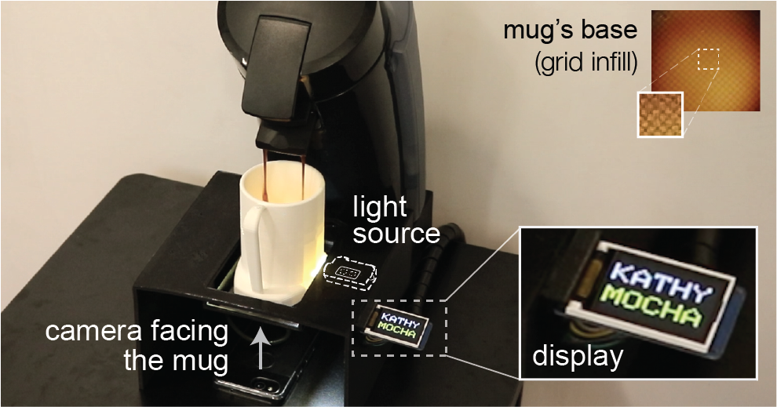
Figure 5. By adding a light, we can also detect variations in infill, such as different infill angles, patterns, and densities, which allow for a larger number of instances. Here, the coffee maker recognizes the mug’s infill and pours the user’s preferred drink.
SLICING PARAMETERS USED FOR LABELING
In the next section of the paper, we report on the types of slicing parameters for surface and infill that can be used for creating unique identifiers.
Surface Parameters
Bottom Surface: Resolution & Angle: When the bottom layer is printed by moving the print head along a path, two parameters influence how the path on this first layer is laid out. Initial bottom line width defines the width of a single line on the bottom surface and thus the resulting resolution. Initial bottom line angle sets the direction when drawing the lines to construct the surface. Combinations of these two parameters are shown in Figure 6.
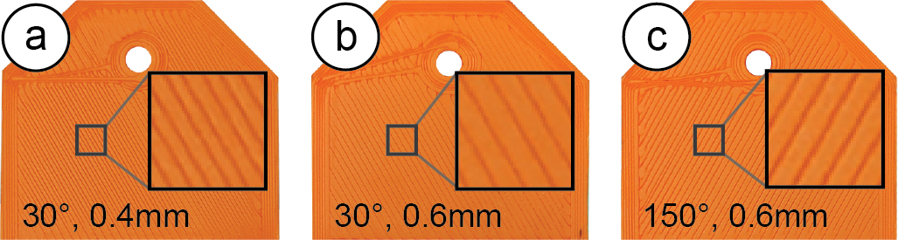
Figure 6. Combinations of different line widths and angles.
Intermediate Layers: Resolution & Angle It is possible to vary the slicing parameters for the intermediate layers in the same way as for the bottom surface. Layer height when varied leads to different layer thicknesses across the printed object and thus affects the overall print resolution. Rotating the 3D model on the build plate leads to different layer angles across the side surface. Combinations of these two parameters can be seen in Figure 7.
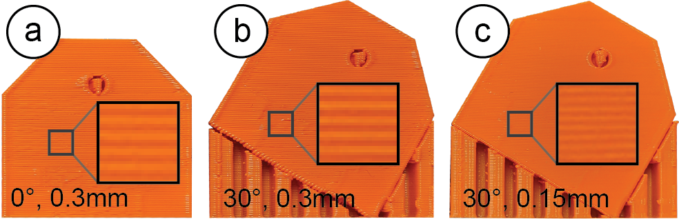
Figure 7. Different layer angles achieved by rotating the model at the expense of additional support material and print time (a vs. b), and various print qualities (b vs. c).
However, using the slicing parameters for layers comes at several drawbacks. As can be seen, changing the layer orientation results in a significant increase in print time due to the extra support material required. Further, changing the layer resolution can result in a notable difference in print quality across different instances. We still include it here to provide a complete overview of all available parameters.
Infill Parameters
Next, we review slicing parameters that change an object’s internal print path.
Infill: Resolution, Angle, & Pattern: Three parameters influence how the infill is laid out. Infill line distance determines how much the lines of the infill are spaced out and thus determines the internal resolution. The denser the infill lines, the higher the infill density. Infill angle rotates the infill lines according to the direction specified in degrees. Different combinations of these two parameters are shown in Figure 8a. Infill pattern allows for different layouts of the print path (Figure 8b), such as grid or triangle shapes.
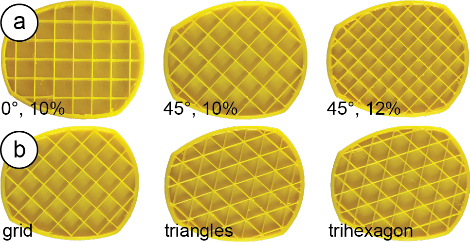
Figure 8. Cross-sections of the mug model show (a) different infill angles and densities, (b) different infill patterns.
Selecting Parameters that Minimize Print Time & Material
When the user enters the number of instances, G-ID varies those slicing settings first that have the least amount of impact on print time and required material. For instance, the bottom line angle does not add any print time, does not change the resolution, and does not require additional material, whereas changing the bottom width changes the resolution slightly. Infill parameters are varied afterwards since they affect most layers of the model, starting with the infill angle, followed by infill pattern and width.
DETECTING & IDENTIFYING SLICING PARAMETERS
To detect these slicing parameters on a 3D print, we apply common image processing techniques. Our pipeline is implemented using OpenCV and uses SimpleElastix, a state-of-the-art image registration library.
Aligning the Object’s Base in Handheld Camera ImagesIn the first processing step, G-ID needs to further refine the position and orientation of the object in the photo the user has taken to match the outline of the 3D model that was shown on the screen. For such alignment, most existing tagging approaches include specific shapes with the tags. For example, QR codes have three square finder patterns. We did not want to add such markers and therefore decided to infer the position and orientation of the object based on the contour of its surface, which G-ID can extract from the 3D model.
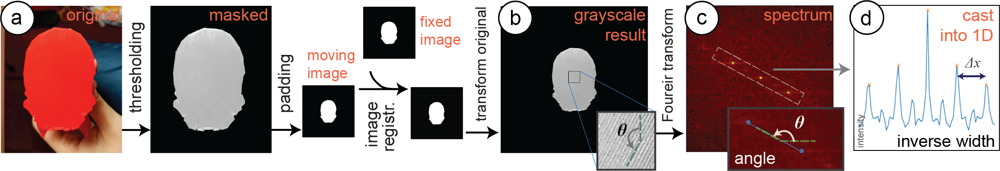
Figure 9. Image registration & processing pipeline. (a) The captured outline is registered with that of the 3D model model for (b) improved alignment. (c) Its Fourier transform is used to infer line angle θ and width d. (d) The distance ∆x between intensity peaks on the inclined line is inversely proportional to d.
Images Used for Alignment
When the user processes the 3D model in the G-ID labeling interface, it automatically saves the outline of its base in the XML file as a binary image (stored as a Base64 string). When the user loads the XML file in the app, the object appears in the user’s model library. After choosing the desired model, the app shows the user the stored outline to assist them with facing the object from the right angle. The app automatically captures the image when the contours are matched (i.e., the bitwise XOR error between the detected contour and target contour is below an acceptable value). G-ID then applies several pre-processing steps, such as applying a bilateral filter to smooth different color and shade regions without blurring their boundaries.
Removing Overhangs
In the next processing step, G-ID removes overhangs, i.e., filters out object geometry that is not part of the bottom surface but appears in the image due to the camera angle. G-ID filters these parts out based on their shading in the camera image: Since the bottom surface is flat and located at a different height than an overhang, the two surfaces have different reflection properties, and thus appear brighter or darker in the image (Figure 9a). To find the shading of the bottom surface, G-ID samples a small region of interest to extract the HSV values to get the corresponding threshold range. G-ID then uses the threshold to mask the contour.
Reducing Perspective from the Image (Undistorting)
After extracting the contour, G-ID applies an affine transformation (translation, rotation, scaling, shearing) to compute the deformation field required for alignment. As input to this image registration, we use the masked image from the previous step (converted to a binary outline) as the moving image. The fixed image is the outline of the 3D model at a constant scale. While a projective transformation would best rectify the perspective, it can be approximated by an affine transform since the perspective deviation is minimized due to human-in-the-loop camera image capturing.
To find the best affine transformation, we use adaptive stochastic gradient descent as the optimizer. As the objective function, we use mean squares since we work with binary images, which have little gradient information. The computed parameter map of the affine transformation is then applied to the image the user has taken to align it with the digital 3D model outline (Figure 9b).
Detecting Bottom Line Angle and Width
Since the traces of the 3D printed surface have a periodic layout, we are able to detect their orientation and widths by looking at the frequency spectrum, i.e., we take the 2D Fourier transform of the image. From this spectrum, we can determine the bottom line angle by extracting the slope of the line on which the periodic peaks lie (peaks are marked yellow in Figure 9c). We can determine the bottom line width d by casting the intensity values on this inclined line into a 1D array and computing the distance x between the maxima, which is inversely proportional to d. This approach is more robust than looking at the original image itself because in case the lines have irregularities, their distances may be inconsistent, whereas the Fourier transform acts as a smoothing filter and provides an averaged value.
Error CheckingIf the picture the user has taken is of poor quality (out-of-focus, poor lighting, or accidental shaking of camera), the lines on the object surface will not be clear enough to extract correct measurements of parameters. Fortunately, these false readings can be avoided due to the nature of the 2D Fourier transform. In the Fourier spectra of digital photos, there is a strong intensity along the x and y-axis since real-world objects have many horizontal or vertical features and symmetries. If surface lines are not distinguishable, peak intensities appear on the x and y-axis and therefore erroneously result in detection of 0° or 90°. Thus, the detection of either of these two angles indicates a false reading. Therefore, we exclude these two values from our allowed slicing parameter space. Whenever our algorithm detects these two angles, we notify the user that the image has to be retaken for correct measurement.
Detecting Infill Angle, Width, and Pattern
To detect the infill parameters, we first remove noise from the image that is caused by the bottom lines on the surface (Figure 10). We remove them by (a) increasing the contrast of the image, (b) blurring the image with a 2D Gaussian smoothing kernel, and (c) applying adaptive thresholding.
To detect the infill pattern, we compare the resulting shapes after thresholding to the known infill pattern templates shown in Figure 10d/e. To determine infill density, we compare the infill templates at different scales to the size of the shapes in the image, the matching template then indicates the size of the pattern. Similarly, the infill angle is detected by rotating the template and finding the angle that gives the smallest sum of squared difference to shapes in the image. Since infill is detected in the stationary setup, alignment of the base is less of a concern and image registration can either be simplified or ignored for shorter processing times.
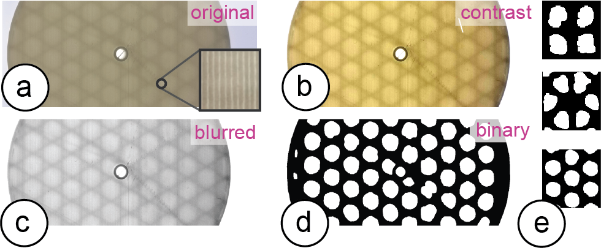
Figure 10. Image processing to extract the components of the infill pattern: (a) photo, (b) contrast increased, (c) blurred, (d) binarized, and (e) matched to the template of the respective infill type: grid, triangles, trihexagon from top to bottom.
SPACING OF SLICING PARAMETERS
We conducted an experiment to determine which parameter spacing can be reliably identified using our detection method. For the experiment, we printed a number of instances with different slicing settings and used our detection method to identify each pattern. Table 1 summarizes the results of this experiment under regular office light conditions. We focus this analysis on the parameters related to bottom surface and infill, which are seen from the object’s base, and do not consider those related to the side (intermediate layers).
|
Min |
Max |
Spacing |
Variations |
Bottom: |
|
|
|
|
Angle (°) |
0° |
180° |
5° |
36-2=34* |
Width (mm) |
0.35 |
0.6 |
0.05 |
6 |
Bottom Total: |
|
|
|
= 204 |
Infill: |
|
|
|
|
Angle (°) |
0° |
60°/90° |
5° |
12 / 18 |
Width (mm) |
2.6 |
3.2 |
0.6 |
2 |
Pattern (type) |
- |
- |
- |
3 |
Infill Total: |
|
|
|
= 84 |
Total: |
|
|
|
= 17,136 |
Table 1: Each slicing parameter’s range (min, max) and incremental spacing values as determined by our experiments. The last column shows the number of variations that can be realized. (*2 angles reserved for error checking).
Using the object’s base for identification has many advantages: (1) it is easier for users to take aligned pictures of the base since it is flat, (2) it is more time and material efficient to manipulate base-related features since they only affect a single layer and have no influence on the print quality of the main surface of the object, (3) there are more combinations of identifiable features since both bottom surface and infill can be seen just from the base, (4) it is convenient to computationally process a flat surface.
We therefore decided to first focus on the bottom layer and infill parameters, however, further analysis can be done concerning side surfaces by repeating our experiment.
Selecting 3D Models to Evaluate Parameter Spacings
How finely differences in slicing parameters can be detected depends on the size of the area of the bottom surface. The larger the surface, the more features can be used by the algorithm for classification. To determine a spacing of parameters that works well across different 3D models, we used objects with varying surface areas for our experiment.
To select these objects, we downloaded the top 50 3D models from Thingiverse and ranked them by their bottom surface area (i.e., the largest square one may inscribe in the contour of the first slice, determined by an automated MATLAB script). We found that 25 models had a large surface area (>6cm2), 7 models had a medium surface area (1.2-6cm2), and 18 models had small surface areas (<1.2cm2). These ranges were determined empirically based on our initial tests. We randomly picked one object representing each of these three categories and printed multiple instances using the parameters below.
Determining the Range for Each Slicer Setting
Before slicing each of the models with different settings, we first determined the min and max values for each setting.
Bottom: For the bottom angle, we can use 0°-180°. Going beyond 180° would cause instances to be non-distinguishable (i.e., 90° looks the same as 270°). We took the min value for initial bottom line width as 0.35mm, the default value recommended in the slicer Cura. Although this parameter can be as large as twice the nozzle size (2*0.4mm), we limit the max value to 0.6mm to avoid disconnected lines. For the pattern settings, which do not have min and max values, we considered the “line” pattern for the bottom surface.
Infill: As for the infill angle, we can use a range of 0°-60° for the trihexagon and triangular patterns, and 0°-90° for the grid pattern, as their layouts are periodic with period 60° and 90°, respectively. For infill line distance (density), we determined that having infill units smaller than 2.6mm makes the pattern unrecognizable — we thus used it as the min value. The max value is 3.2mm for objects with medium base area but may go up to 8.0mm for larger objects. Going beyond this value would imply an infill density of less than 10%, and thus fragile, less stable objects. The three infill pattern (type) settings do not have min or max values.
Slicing with Different Spacings and Capturing PhotosNext, we used our three selected objects (small, medium, large), and printed them with different slicing settings. Our goal was to determine how finely we can subdivide the given parameter ranges for accurate detection. To find the optimal spacing for each parameter, we made pairwise comparisons of two values (e.g., for angles, instance #1: 8° - instance #2: 5°; difference: 3°), while keeping all other parameters constant. Based on 16 pictures taken for each pairwise comparison, we report the accuracy at which we can distinguish the two instances. For the prints with infill variations, we held a small light source (Nitecore Tini) against the side of the 3D printed object before taking the image.
Results of the Experiments
As expected, objects from the “small” category did not have sufficient base area to fit in enough infill units and thus not give satisfactory results. We therefore conclude that G-ID cannot be used for very small bases and excluded them from the rest of the analysis. We next discuss the results for each slicing parameter for the medium and large object category.
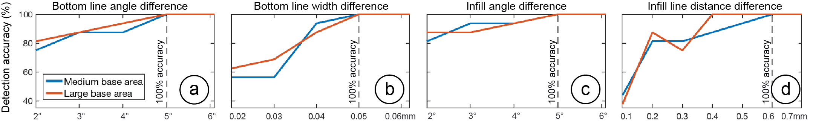
Figure 11. Detection accuracies vs. parameter spacing between pairs of instances for the four slicing parameters
(bottom line angle & width, as well as infill angle &width). All plots have the same y-range.
Bottom Line Angle & Width
The dashed lines in Figure 11a,b indicate that a spacing of 5° and 0.05 mm provides a classification accuracy of 100% for both the medium and large base area categories, respectively. Thus, a range of 0°-180° would give us 36 variations for the angle. However, we exclude the two degrees 0° and 90° from the bottom line angle range since these are reserved for error checking (as described in section “Detecting Slicing Parameters”), therefore we have 34 variations. A range of 0.35-0.6mm allows 36 variations for the width.
Infill Angle & Line Distance (Width)
The dashed lines in Figure 11c,d show that a spacing of 5° and 0.6mm provides a 100% detection accuracy for the two categories, respectively. Thus, for the ranges of 0°-60° and 0°-90°, we can use 12 or 18 variations, respectively. For the width, we can use, for medium objects, a range of 2.6-3.2mm (2 variations); and for large objects 2.6-8.0mm (10 variations). We report the smaller number in Table 1.
Infill Pattern
The confusion matrix in Figure 12 shows that the “grid” and “trihexagon” work for both medium and large classes. For large objects, we can also use all three different patterns.
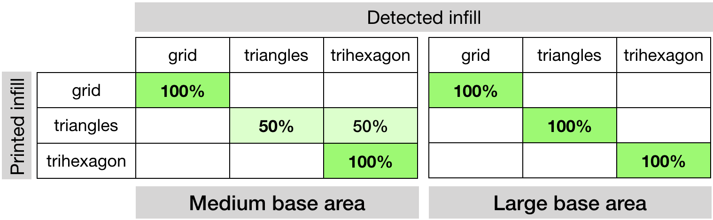
Figure 12. Sliced infill patterns vs. detected infill patterns.
Based on the results, using a parameter spacing that works for both medium and large objects, we can achieve a total of 204 instances if we only use the camera, or 17,136 instances if we use both the camera and light (see Table 1). In comparison to other types of tags, we can say that these parameter spaces have a larger code capacity than a 1D barcode with 7 or 14 bits, respectively.
Cross-ValidationTo cross-validate our parameter spacing, we printed another random set of 16 objects (10 large, 6 medium) from the same top 50 model list from Thingiverse (excluding the ones we used in the previous experiment) with white filament. Before printing, we randomly assigned each model a combination of slicing settings from the available parameter space and then tested if G-ID can identify them. Our second goal was to see if the parameter spacing still applies when multiple parameters are varied at the same time (our previous experiment only varied one slicing parameter per instance at a time). Among the 10 objects with large bottom area, all slicing parameters were correctly identified. Among the 6 objects from the medium category, 5 were correctly identified. In total, the detection accuracy is 93.75%. The falsely identified model had the smallest bottom surface area (1.4cm2), which confirms the fact that objects without sufficient surface area cannot be recognized.
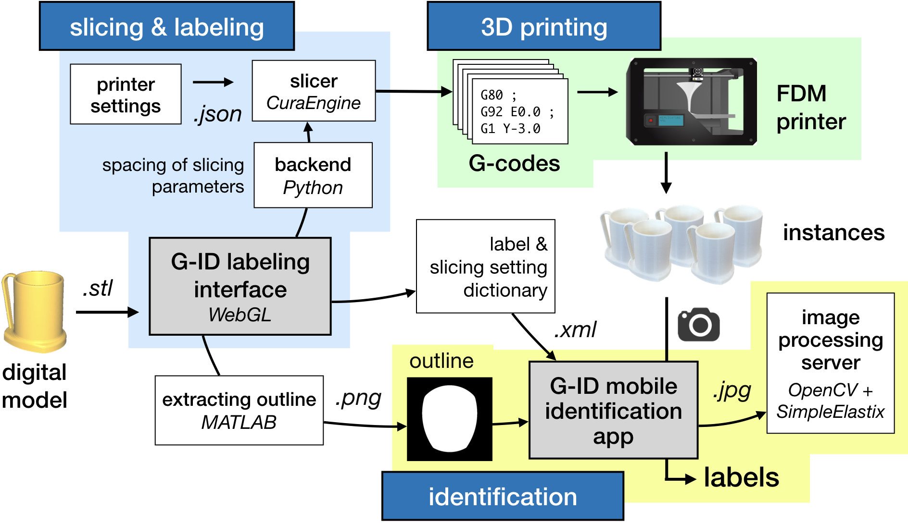
Figure 13. System overview.
SYSTEM IMPLEMENTATION
An overview of the system is shown in Figure 13. G-ID’s labeling interface for creating multiple instances runs on the browser and is based on WebGL. Once the user drags a 3D model (.stl) onto the canvas and enters the number of instances, the interface calls its backend written in Python, which is responsible for the distribution of the slicing parameters. Once the slicing parameters are determined for each individual instance, the backend calls the slicer CuraEngine to compute the G-code for each instance.
After the instances are sliced with their individual slicer settings, the user is shown the 2D sliced layers as well as the 3D model. For rendering these previews, we use the JavaScript library Three.js. Finally, G-ID saves an .XML file with the slicing parameters, labels and the contour of the object’s base as an image (created using an automated MATLAB script) for future identification with the G-ID mobile app.
EVALUATION
Different Materials, Lighting Conditions, Thicknesses
Surface: To see how the filament’s color and different lighting affect the detection of surface parameters, we printed six instances of the key cover with eight different colors of Ultimaker PLA filaments (total of 48 instances) and using a dimmable LED lamp varied the light in the room from 0 – 500 lux (measured with lux meter Tacklife LM01). We picked the filament colors to be the primary and secondary colors of the RYB model, as well as white and black filament. We selected the light intensities to represent different low-light conditions. For slicing, we used surface parameters distributed evenly along bottom line angle and width within the allowed range from Table 1. The results are shown in Figure 14. All colors worked well for lighting conditions above 250 lux. This shows that our approach works well in classrooms (recommended light level: 250 lux) and offices/laboratories (recommended light level: 500 lux). The results also show that the camera needs more light to resolve the lines for lighter colors (i.e., white and yellow) than for darker colors. Since we used white filament for our parameter spacing evaluation, the results in Table 1 work even for worst-case scenarios. This also means that for other filament colors, an even smaller surface area would suffice for correct detection since the surface details can be better resolved.
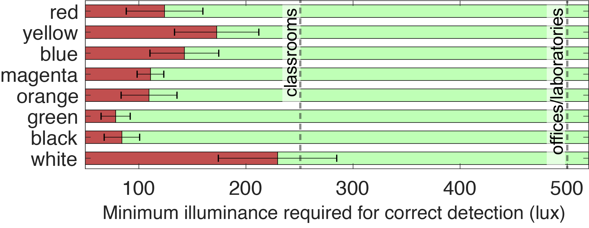
Figure 13. System overview.
Infill: We were able to detect the patterns for all of the aforementioned filament colors except for black due to its opaque nature. Further, the brighter the light, the thicker the object base may be: 145 lumens suffice for a base of 1mm (suggested thickness in Cura), 380 lumens suffice for 1.75 mm.
Different 3D PrintersSince G-ID takes as input universal units like millimeters (width) and degrees (angle), our method extends to FDM printers other than the one we used for the experiments. To confirm this, we fabricated six test prints on the 3D printers Prusa i3 MK3S and Creality CR-10S Pro in addition to the Ultimaker 3 that we used for our experiments, and inspected the traces laid down with a microscope. The line widths of the prints had an average deviation of 9.6m (Prusa) and 10.7m (Creality) from the Ultimaker 3 prints. The line angles had an average deviation of 0.5° (Prusa) and 0.25° (Creality). These deviations are insignificant for our detection method since the spacing values chosen for the parameters are much larger than these values. To verify this, we used our mobile app to take pictures of these samples and ran our algorithm, which correctly detected the unique identifiers.
Camera Distance and Angle
Distance: If the phone is held too far away from the object, the camera cannot detect the detailed grooves on the surface. To determine how far the camera can be held from the object, we took pictures with smartphones of different camera resolutions. We found that the iPhone 5s (8MP) can resolve the slicing parameter features up to 26cm, Pixel 2 (12.2MP) up to 36cm, and OnePlus 6 (16MP) up to 40cm. Taking into account the cameras’ field of view, this means that users can fit in an object with one dimension as large as 29cm, 45cm, and 52cm, respectively. G-ID guides users into the correct camera distance by varying the size of the object outline displayed on the user’s phone for alignment.
Angle: Since our image registration technique uses affine transformation, it is not able to fully remove the perspective distortion if the camera angle varies strongly. However, since our app guides users to align the object, the distortion is negligible. To show our algorithm can robustly read bottom surface parameters on a variety of shapes, we created a virtual dataset similar to the LayerCode paper. We downloaded the first 600 models from the Thingi10K database that have a rotationally non-symmetric base of appropriate size, sliced them with a random set of slicing settings, and rendered the G-codes using 3D editor Blender. We placed the virtual camera at points located on a spherical cap above the object base, with 8 evenly sampled azimuthal angles for each of the 5 polar angles. The percentage of shapes read correctly for each polar angle value θ is given in Table 2. The spacing values chosen for the parameters act as a buffer to prevent false readings. The objects for which detection failed at small angles had rather rounded bases, which makes alignment challenging.
| θ | 4° |
6° |
8° |
10° |
12° |
Accuracy |
98.50% |
94.50% |
86.67% |
75.00% |
64.50% |
Table 2: Polar angle θ vs. the percentage of identified objects.
APPLICATION SCENARIOS
Below, we outline three further example scenarios in addition to the two previously explained applications.
Finding Optimal Print Settings: G-ID can be used to identify which slicing parameters a particular 3D print was created with. In Figure 15, a maker is trying to find the best angle for optimizing mechanical strength, and prints the model multiple times with varying settings. Rather than carefully writing down which settings were used for which one, the maker can retrieve a particular setting from a print simply by taking a picture of it. It is unlikely that they users estimate these settings by eye correctly as seeing tiny differences is not trivial.
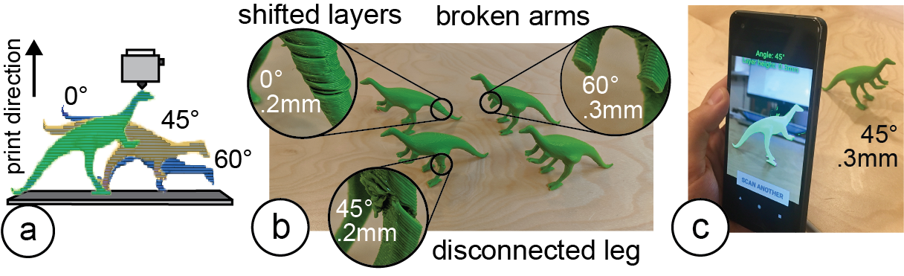
Figure 15. Identifying particular print settings with G-ID: (a) exploring different slicing parameters and (b) printing them, (c) retrieving the best settings using G-ID.
User Identification: G-ID can be used to create identifiable objects that belong to a specific user cheaply and rapidly as it doesn’t require the user to embed, e.g., an RFID/NFC tag in a separate step. For instance, in toys-to-life video games, physical character figurines that carry a G-ID label can be used to load a player’s identity/score. When users insert their figurine into the G-ID reader, it communicates the user’s ID to the game to display their name and score (Figure 16).
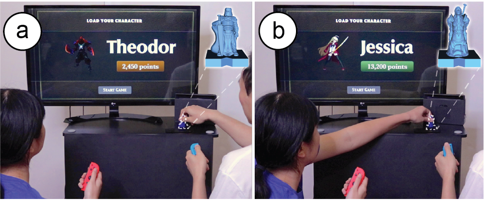
Figure 16. (a) Toys-to-life figurines are used to identify the player and display their info in the video game.
Labeling a Commercial 3D Print for Anti-Counterfeiting: Online 3D printing services such as 3D Hubs or makexyz ensure to refund customers if they can show a 3D model was not printed according to the user’s specifications. By slicing a model using certain settings and storing this information, they can verify that a returned object was indeed fabricated by them before a refund is approved. Let us assume a 3D model is leaked and frauds attempt to print a copy themselves and then return that to get a refund (although they never bought it in the first place). Businesses can use G-ID to cross-verify the print setting used to create the original.
DISCUSSION & LIMITATIONS
Next, we discuss limitations and future work for labeling and identifying objects by their slicing parameters.
Other Slicing ParametersIn this work, we focused on surface and infill parameters, which offer a large number of unique identifiable features. Other slicing parameters, such as those that create geometry that is removed after fabrication (e.g., those related to support material or build plate adhesion) are less suitable.
However, for special materials, such as wood filaments, the shade of the object’s color can be altered by varying the speed and temperature, which could be used to create differences among instances: the hotter/slower the extruder, the more the wood particles burn and the darker the resulting surface (Figure 17). However, since the changes affect the objects appearance, we do not consider them for our work.
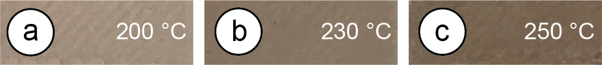
Figure 17. The hotter the nozzle, the darker the print’s finish.
Since we use the outline of objects to extract the orientation of features, objects whose bases are rotationally symmetric are less suitable for our approach. Thus, the number of identifiable angles is reduced for certain shapes, e.g., for a square base, the range narrows down from 0°-180° to 0°-90°.
Non-Flat Side SurfacesWhen a camera’s optical axis is parallel to the object’s axis of rotation on the build plate, the layer traces on a curved surface appear as straight, parallel lines and the features can be extracted similarly using Fourier transforms. For that, we instruct the user to take a picture from the correct viewpoint (as shown in Figure 18) by generating a silhouette guide of the object taking into account the camera’s focal length
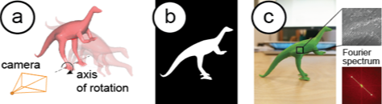
Figure 18. (a) Model’s axis of rotation is orthogonal to the image plane of the virtual camera, (b) rendered target outline for the user to align model, (c) image has parallel traces.
FDM and SLA printing have been the most accessible consumer techniques for the last decade. Although SLA achieves better resolutions, individual layers on objects can still be distinct (Figure 19). As for DLP printing, the projected pattern creates rectangular voxels that cause the edges to look stepped; different voxel sizes thus lead to different appearances . Most printing methods use infill, so the general idea of varying infill still applies. We thus think our method will stay relevant. Even if printing imperfections become smaller in the future, there are two factors to consider: As 3D printers improve in resolution, camera resolution improves over time (see Samsung’s latest 108MP sensor). Computer vision gets better too: Neural networks can now pick up details beyond what the human eye or traditional image processing can detect, e.g., they have been used to identify tiny defects in solar cells or dents in cars.
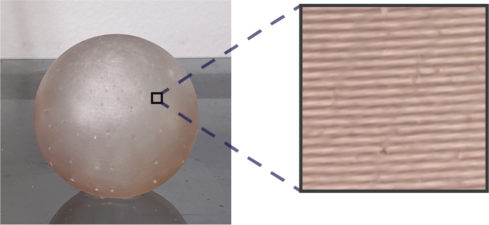
Figure 19. Formlabs SLA print captured by a phone camera.
CONCLUSION & FUTURE WORK
We presented G-ID, a method that utilizes the subtle patterns left by the 3D printing process to identify objects and that provides both a labeling and identification interface for creating and detecting surface and infill parameters using only a commodity camera. We reported on the code capacity enabled by an off-the-shelf slicer. In the future, this can be scaled up by building a custom slicer for creating unique print paths that go beyond what current slicers offer, e.g., spatial pattern tiling could expand the number of encodings (2 different tiles would give more than 2042=41,616 combinations). Also, our current implementation uses optimization-based image registration, which takes a few seconds. In the future, we can enable continuous detection for faster image capturing using optimization-free contour matching methods.
ACKNOWLEDGMENTS
We thank Alexandre Kaspar, Liane Makatura, Danielle Pace, and Jack Forman for the fruitful discussions. This work was supported in part by NSF Award IIS-1716413. Sriram Subramanian is grateful for the ERC Advanced Grant (#787413) and the RAEng Chairs in Emerging Technology Program.